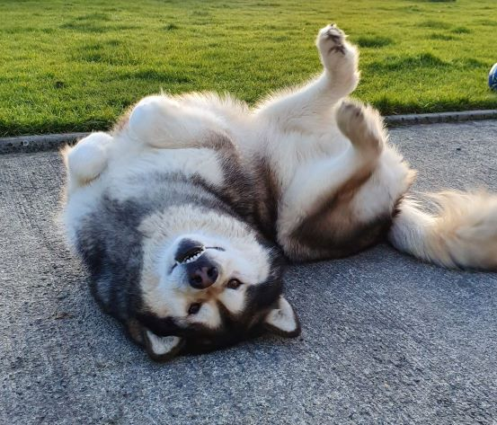

About page
Friendly 10 year old 'puppy' Nanook

Some funny things that he loves to do:
- He loves to sleep in some very odd positions
- Nanook loves to walk to the bog and get paws dirty
- Sometimes he loves to 'sing' songs for the neighbour dogs
- One of his performance can be found here
His favourite food is:
-
Snacks:
- Bacon strips
- Grapes
- Anything that falls off the owners plate
-
Dinner:
- Cooked minced meat
- Chicken soup
- Anything that comes from owners dinner
His the least favourite food:
- Sweetcorn
- Any kinds of pasta
- Peas